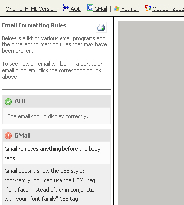
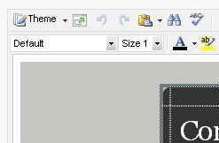

What you can do to make full use of your email templates.
Creating your email campaigns will never be the same again once you start using the template system to its full effect. This guide is intended to let you know exactly what the template system is capable of helping you do to make creating emails easy. It will also let you in on many tips to creating email templates that will be read and enjoyed by more people.
Good ideas for better layouts.
There are many things that you can do to improve the look and functionality of your email campaigns and autoresponders. Here are a few that have been proven to help your email look better and increase repeat opens by your contacts. Remember, even though you are limited by CSS and HTML that you can use and image size that you should send you can still be very creative and develop amazing email templates that will look the same to all your contacts no matter what email application they use.
One of the biggest issues people have when creating email templates is using background images. Microsoft Outlook 2007 and some other email clients do not support this element and as such if you are relying on a background image to make your email then you will loose this for many of your potential contacts.
Remember that many email clients such as Gmail and Hotmail will not render any code before the <body> tag. This means that if you try to add CSS styles to your code by creating classes and defining the CSS rules in the <head> your CSS will not be rendered. To get around this remember to always make use of inline CSS. Add your styles to the individual elements such as tables, table rows, text etc. This may take a lot longer to do but will ensure that your emails look good for everyone that views them.
Make sure that you do not make your email templates wider then 500 - 650 pixels. This will ensure that none of your users should have to scroll horizontally to view the content of your email.
Try not to use 1x1 pixel spacer gifs (to force widths in your table data cells) as this can cause your email to be picked up as spam.
Make sure you make good use of the first 3-4 inches of your email campaign. Many contacts will have a preview pane set up in their email client and this is the first thing that they will see. If you grab their attention here then they will be more likely to open your email and read further.
Make sure that you use correct HTML when creating your email campaigns. Invalid HTML can cause many problems when trying to render in email clients. Have a look here for a free HTML validation application.
Do not add any JavaScript to your email. Whilst this can make websites function well and look amazing, email clients will not understand this and will break your email.
Make sure to add a link to a web version of your email. You can do this by adding the custom field %%webversion%% to your email. This will ensure that if your contact cannot for some reason see the email in their email client they will be able to view it online.
Use the alt element for all images. This does not work for all email clients but will for most. It will also enable those users that do not download or cannot download images to know what the image was intended to be. You can use this like alt="Company Logo" etc.
Do not try to embed Flash movies or any other type of movie file as most email clients will not render these correctly. Instead you can create a screen shot of these files and include that image as a link to the movie file hosted on your website. This will not only decrease the size of your email campaign, it will also ensure that your contacts can all see what you are sending them.
How to make sure that your emails look the same in all different email clients.
One of the most important things to do with email marketing is to test. You need to make sure that your email will look the same (or at the very least still look good) when viewed in different email clients such as Gmail, Outlook 2007, Thunderbird etc.
To aid in this you can use the built in feature for 'Email Client Compatibility'. This feature will give you an idea on what your emails will look like in many different email clients. It will show you a display as well as inform you of the reason why the email will be displayed the way it is.

Most email clients will not render your code that you place before the <body> tags so with this in mind you should try to avoid any vital code being placed here. You can still include tags such as title="My Email Campaign" so that when you display this in the web browser your users will be able to see the title of the document. These tags simply wont render in the email when it is sent.
What this means is that you should avoid adding CSS styles and classes etc. to the <head> section of your emails HTML. Adding this here and applying it to different elements in your HTML will result in no style being added to your emails. Do not have <style> tags. This will render in some clients but not all. Simply make all your CSS styles inline and this will solve this problem.
Some examples of CSS and HTML elements that you should not use are:
Gmail doesn’t like the CSS property background or background color so you should use the HTML tag bgcolor to set the background color.
Hotmail does not render border tags so this can place restrictions on you when you are using border for underlining text or placing a line on top of your tables etc.
If you have a block of paragraphs you should separate them by using <br/><br/> rather then <p></p> as some email clients will neglect to add the space between the paragraphs.
Because most email clients strip out your CSS from the <body> tags you should wrap your email in a table and add your CSS to that. This way you can add background colors that will appear in all email clients. So instead of having HTML that looks like:
<body bgcolor="blue"> Your email template content....
You would have HTML that looked more like:
<body> <table bgcolor="blue" width="100%">
Your email template content....
The WYSIWYG editor (Non-breaking space) into your HTML code if there is no text in a table cell you should replace this with <span></span> to take up the space.
If you are using images as corners to make a rounded corner effect you should make them at least 25px tall to avoid cell padding from showing up.
With the release of Microsoft's Outlook 2007 email rendering capabilities took a big step backwards. For a full list of the HTML and CSS elements supported by Outlook 2007 please have a look at this MSDN page.
How to include colour themes into your emails.
The application has built into it a theme changer so that you can create one email template that contains certain code snippets and then when creating an email campaign or autoresponder you can change the colour theme of your email with a click of a button. Here is how.
To do this, you will need to add certain tags to your HTML code. When a template is seen by the editor to contain these tags it will display a theme button that you can use to select a colour theme to use for your email.

The theme changer will look through your HTML to find special tags designed to let it know that you want to change the color of that particular element.
Your code should then include something like the following: name=”tid” description=”mediumBgcolor”
This would then set that particular elements background color to the medium variation of the theme you choose.
I.E. <table bgcolor=”#FFFFFF” name=”tid” description=”mediumBgcolor”>
This would then allow the editor to change the background color of the table element when you change the theme.
The different shade variations you can use are:
lightest
light
medium
dark
darkest
The different built in elements include:
BorderColor
BorderBottomColor
BackgroundColor
Bgcolor
Color
The color shades should always be written in lower case and the element selectors should be written as they appear above.
How to create easy repeatable areas in your templates.
By wrapping your content sections in some simple tags you can create repeatable sections that make creating email campaigns off templates a breeze. These content blocks are areas of text and formatting (such as table rows or even entire tables) that you can duplicate and remove by clicking a button.
Your content block headers and text should be wrapped in the following tags.
This will create a block of content that you can duplicate but not delete. This way you will always have a base paragraph to be able to build your emails off. All content blocks that you create off of this type of repeatable block will be able to be deleted. It is simply the first block that can not.
This type of content block can be deleted. Use this to build up a few paragraphs for later editing but with the intention that you can delete them if you do not have the content for them. This will allow you to see what your emails will look like with some content in them.
How do I make certain areas of the template editable?
You can create 'Editable Regions' so that only the sections of the page that you want to edit can be changed. This can be very useful if you create a template that all of your pages are modeled off or you have other people login to update some of your pages.
Editable Regions can be specified by surrounding the sections of the template that you would like to allow editing to like the following:
Note that the comments field will create a tool tip with that comment for the end user when they place their mouse cursor over the editable region.
There is NO difference in either method above, so the choice is yours as to which comment types you would like to use.
Macromedia Dreamweaver(TM) Style Templates
Users familiar with Macromedia Dreamweaver, will notice that the above comment tags are consistent with the way Macromedia Dreamweaver creates its editable regions for files based on a Macromedia Dreamweaver Template. This allows you to create web pages based on Dreamweaver Templates which will be automatically editable within the application with the same Editable Regions defined. Pages edited in the applications editor, can also be re-edited using Macromedia Dreamweaver, with all Editable Regions still intact.